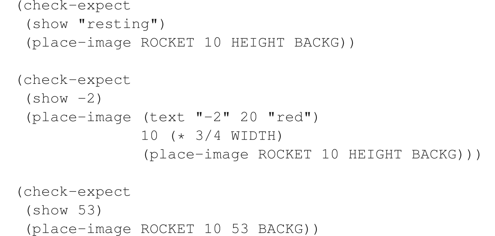
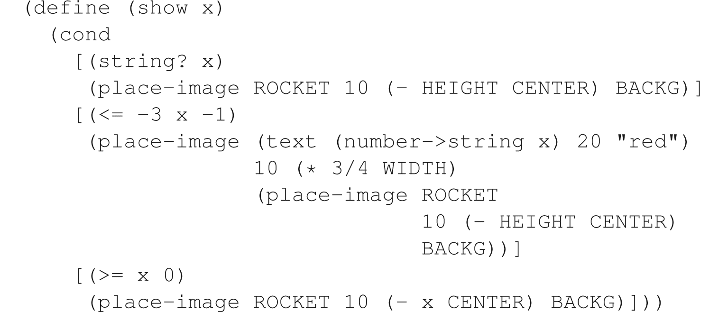
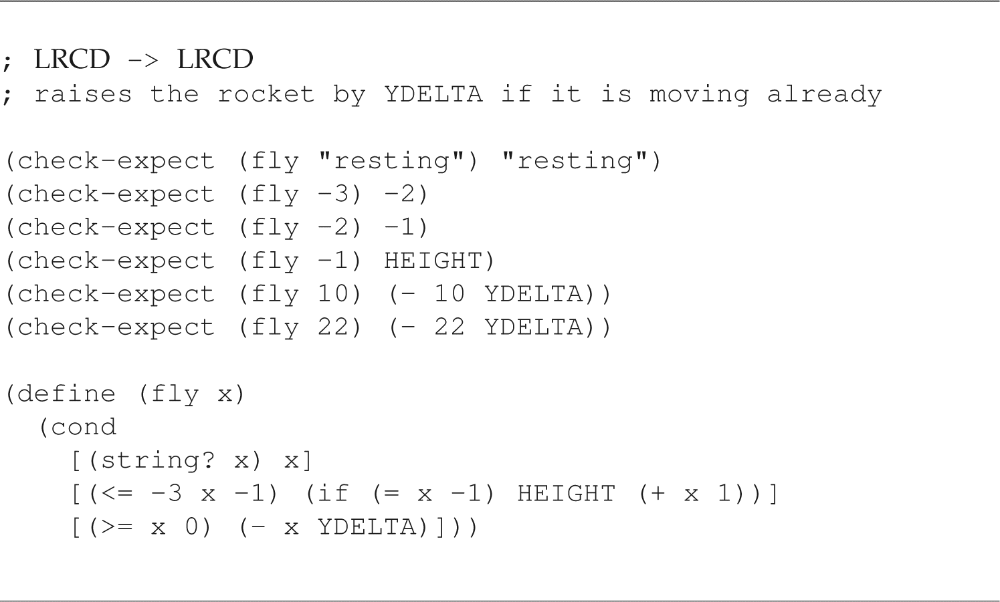

4.5 Itemizations
An interval distinguishes different sub-classes of numbers, which, in principle, is an infinitely large class. An enumeration spells out item for item the useful elements of an existing class of data. Some data definitions need to include elements from both. They use itemizations, which generalize intervals and enumerations. They allow the combination of any already-defined data classes with each other and with individual pieces of data.
Consider the following example, a rewrite of an important data definition from chapter 4.3:
; A KeyEvent is one of:
; -- 1String
; -- "left"
; -- "right"
; -- "up"
; -- …
In this case, the KeyEvent data definition refers to the 1String data definition. Since functions that deal with KeyEvents often deal with 1Strings separately from the rest and do so with auxiliary functions, we now have a convenient way to express signatures for these functions, too.
The description of the string->number primitive employs the idea of an itemization in a sophisticated way. Its signature is
; String -> NorF
; converts the given string into a number;
; produces #false if impossible
(define (string->number s) (… s …))
meaning that the result signature names a simple class of data:
; An NorF is one of:
; -- #false
; -- a Number
This itemization combines one piece of data (#false) with a large, and distinct, class of data (Number).
Now imagine a function that consumes the result of string->number and adds 3, dealing with #false as if it were 0:
; NorF -> Number
; adds 3 to the given number; 3 otherwise
(check-expect (add3 #false) 3)
(check-expect (add3 0.12) 3.12)
(define (add3 x)
(cond
[(false? x) 3]
[else (+ x 3)]))
As above, the function’s body consists of a cond expression with as many clauses as there are items in the enumeration of the data definition. The first cond clause recognizes when the function is applied to #false; the corresponding result is 3 as requested. The second clause is about numbers and adds 3 as required.
Let’s study a somewhat more purposeful design task:
Sample Problem Design a program that launches a rocket when the user of your program presses the space bar. The program first displays the rocket sitting at the bottom of the canvas. Once launched, it moves upward at three pixels per clock tick.
This revised version suggests a representation with two classes of states:
; An LR (short for launching rocket) is one of:
; -- "resting"
; -- NonnegativeNumber
; interpretation "resting" represents a grounded rocket
; a number denotes the height of a rocket in flight
While the interpretation of "resting" is obvious, the interpretation of numbers is ambiguous in its notion of height:
1. the word “height” could refer to the distance between the ground and the rocket’s point of reference, say, its center; or
2. it could mean the distance between the top of the canvas and the reference point.
Either one works fine. The second one uses the conventional computer meaning of the word “height.” It is thus slightly more convenient for functions that translate the state of the world into an image, and we therefore choose to interpret the number in that spirit.
To drive home this choice, exercise 57 below asks you to solve the exercises of this section using the first interpretation of height.
Exercise 53. The design recipe for world programs demands that you translate information into data and vice versa to ensure a complete understanding of the data definition. It’s best to draw some world scenarios and to represent them with data and, conversely, to pick some data examples and to draw pictures that match them. Do so for the LR definition, including at least HEIGHT and 0 as examples. 
In reality, rocket launches come with countdowns:
Sample Problem Design a program that launches a rocket when the user presses the space bar. At that point, the simulation starts a countdown for three ticks, before it displays the scenery of a rising rocket. The rocket should move upward at a rate of three pixels per clock tick.
Following the program design recipe, we first collect constants:
(define HEIGHT 300) ; distances in pixels
(define WIDTH 100)
(define YDELTA 3)
(define BACKG (empty-scene WIDTH HEIGHT))
(define ROCKET (rectangle 5 30 "solid" "red"))
(define CENTER (/ (image-height ROCKET) 2))
While WIDTH and HEIGHT describe the dimensions of the canvas and the background scene, YDELTA describes how fast the rocket moves along the y-axis, as specified in the problem statement. The CENTER constant is the computed center of the rocket.
Next we turn to the development of a data definition. This revision of the problem clearly calls for three distinct sub-classes of states:
; An LRCD (for launching rocket countdown) is one of:
; -- "resting"
; -- a Number between -3 and -1
; -- a NonnegativeNumber
; interpretation a grounded rocket, in countdown mode,
; a number denotes the number of pixels between the
; top of the canvas and the rocket (its height)
The second, new sub-class of data—three negative numbers—represents the world after the user pressed the space bar and before the rocket lifts off.
At this point, we write down our wish list for a function that renders states as images and for any event-handling functions that we may need:
; LRCD -> Image
; renders the state as a resting or flying rocket
(define (show x)
BACKG)
; LRCD KeyEvent -> LRCD
; starts the countdown when space bar is pressed,
; if the rocket is still resting
(define (launch x ke)
x)
; LRCD -> LRCD
; raises the rocket by YDELTA,
; if it is moving already
(define (fly x)
x)
Remember that the design recipe for world programs dictates these signatures, though the choice of names for the data collection and the event handlers are ours. Also, we have specialized the purpose statements to fit our problem statement.
From here, we use the design recipe for functions to create complete definitions for all three of them, starting with examples for the first one:

As before in this chapter, we make one test per sub-class in the data definition. The first example shows the resting state, the second the middle of a countdown, and the last one the rocket in flight. Furthermore, we express the expected values as expressions that draw appropriate images. We used DrRacket’s interactions area to create these images; what would you do?
A close look at the examples reveals that making examples also means making choices. Nothing in the problem statement actually demands how exactly the rocket is displayed before it is launched, but doing so is natural. Similarly, nothing says to display a number during the countdown, yet it adds a nice touch. Lastly, if you solved exercise 53 you also know that 0 and HEIGHT are special points for the third clause of the data definition.
In general, intervals deserve special attention when you make up examples, that is, they deserve at least three kinds of examples: one from each end and another one from inside. Since the second sub-class of LRCD is a (finite) interval and the third one is a half-open interval, let’s take a look at their end points:
• Clearly, (show -3) and (show -1) must produce images like the one for (show -2). After all, the rocket still rests on the ground, even if the countdown numbers differ.
• The case for (show HEIGHT) is different. According to our agreement, the value HEIGHT represents the state when the rocket has just been launched. Pictorially this means the rocket is still resting on the ground. Based on the last test case above, here is the test case that expresses this insight:
(check-expect
(show HEIGHT)
(place-image ROCKET 10 HEIGHT BACKG))
Except that if you evaluate the “expected value” expression by itself in DrRacket’s interactions area, you see that the rocket is halfway underground. This shouldn’t be the case, of course, meaning that we need to adjust this test case and the above:
(check-expect
(show HEIGHT)
(place-image ROCKET 10 (- HEIGHT CENTER) BACKG))
(check-expect
(show 53)
(place-image ROCKET 10 (- 53 CENTER) BACKG))
• Finally, determine the result you now expect from (show 0). It is a simple but revealing exercise.
Following the precedents in this chapter, show uses a cond expression to deal with the three clauses of the data definition:
(define (show x)
(cond
[(string? x) …]
[(<= -3 x -1) …]
[(>= x 0) …]))
Each clause identifies the corresponding sub-class with a precise condition: (string? x) picks the first sub-class, which consists of just one element, the string "resting"; (<= -3 x -1) completely describes the second sub-class of data; and (>= x 0) is a test for all non-negative numbers.
Exercise 54. Why is (string=? "resting" x) incorrect as the first condition in show? Conversely, formulate a completely accurate condition, that is, a Boolean expression that evaluates to #true precisely when x belongs to the first sub-class of LRCD.
Combining the examples and the above skeleton of the show function yields a complete definition in a reasonably straightforward manner:

Indeed, this way of defining functions is highly effective and is an essential element of the full-fledged design approach in this book.
Exercise 55. Take another look at show. It contains three instances of an expression with the approximate shape:
(place-image ROCKET 10 (- … CENTER) BACKG)
This expression appears three times in the function: twice to draw a resting rocket and once to draw a flying rocket. Define an auxiliary function that performs this work and thus shorten show. Why is this a good idea? You may wish to reread the Prologue.
Let’s move on to the second function, which deals with the key event to launch the rocket. We have its header material, so we formulate examples as tests:
(check-expect (launch "resting" " ") -3)
(check-expect (launch "resting" "a") "resting")
(check-expect (launch -3 " ") -3)
(check-expect (launch -1 " ") -1)
(check-expect (launch 33 " ") 33)
(check-expect (launch 33 "a") 33)
An inspection of these six examples shows that the first two are about the first sub-class of LRCD, the third and fourth concern the countdown, and the last two are about key events when the rocket is already in the air.
Since writing down the sketch of a cond expression worked well for the design of the show function, we do it again:
(define (launch x ke)
(cond
[(string? x) …]
[(<= -3 x -1) …]
[(>= x 0) …]))
Looking back at the examples suggests that nothing changes when the world is in a state that is represented by the second or third sub-class of data. Meaning, launch should produce x when this happens:
(define (launch x ke)
(cond
[(string? x) …]
[(<= -3 x -1) x]
[(>= x 0) x]))
Finally, the first example identifies the exact case when the launch function produces a new world state:
(define (launch x ke)
(cond
[(string? x) (if (string=? " " ke) -3 x)]
[(<= -3 x -1) x]
[(>= x 0) x]))
Specifically, when the state of the world is "resting" and the user presses the space bar, the function starts the countdown with −3.
Copy the code into the definitions area of DrRacket and ensure that the above definitions work. At that point, you may wish to add a function for running the program:
; LRCD -> LRCD
(define (main1 s)
(big-bang s
[to-draw show]
[on-key launch]))
This function does not specify what to do when the clock ticks; after all, we haven’t designed fly yet. Still, with main1 it is possible to run this incomplete version of the program and to check that you can start the countdown. What would you provide as the argument in a call to main1?
The design of fly—the clock-tick handler—proceeds just like the design of the preceding two functions, and figure 25 displays the result of the design process. Once again the key is to cover the space of possible input data with a goodly bunch of examples, especially for the two intervals. These examples ensure that the countdown and the transition from the countdown to the liftoff work properly.

Figure 25: Launching a countdown and a liftoff
Exercise 56. Define main2 so that you can launch the rocket and watch it lift off. Read up on the on-tick clause to determine the length of one tick and how to change it.
If you watch the entire launch, you will notice that once the rocket reaches the top something curious happens. Explain. Add a stop-when clause to main2 so that the simulation of the liftoff stops gracefully when the rocket is out of sight.
The solution of exercise 56 yields a complete, working program, but one that behaves a bit strangely. Experienced programmers tell you that using negative numbers to represent the countdown phase is too “brittle.” The next chapter introduces the means to provide a good data definition for this problem. Before we go there, however, the next section spells out in detail how to design programs that consume data described by itemizations.
Exercise 57. Recall that the word “height” forced us to choose one of two possible interpretations. Now that you have solved the exercises in this section, solve them again using the first interpretation of the word. Compare and contrast the solutions.